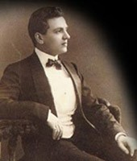
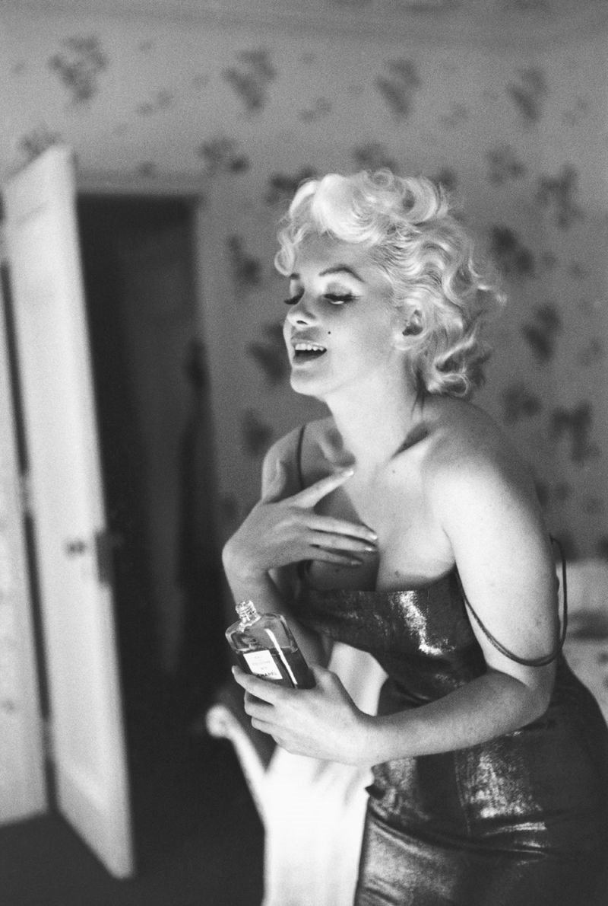

향수의 역사 :
현재
1921년 샤넬과 조향사 어네스트 보우가 만든
'샤넬 NO.5'가 패션과 향수를 만나
향수시장은 전성기를 맞았다.
어네스트 보우는 샤넬만의 패션스타일과
실루엣 칼라등을 합성향료와
수종 알데히드를 조합하여
지금까지 없었던 향을 만들었다.
이후 향산업은 패션으로 표현할 수 없는
무엇을 보여주는데 중요한 역할을 하였고,
향수산업은 향수브랜드시대를 열었다.


가장 유명한 향수
샤넬 NO.5는 마릴린먼로가
'잘 때 이것만 입고 잔다'고 말한 향수이다.
이름의 NO.5는 NO.1 ~ NO.4도 있는 것이 아닌,
어네스트 보우가 10개의 샘플 중
5번째 향을 골라 붙여진 이름이다.
샤넬 NO.5는 전세계에서 30초에
한 병씩 팔릴 정도로 인기가 많은 향수지만,
특유의 파우더리함(가루 화장품)이 있어
올드한 느낌이 강하기에 호불호가 있는 향이다.